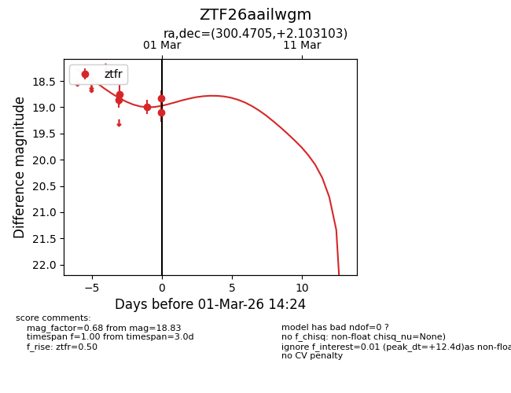
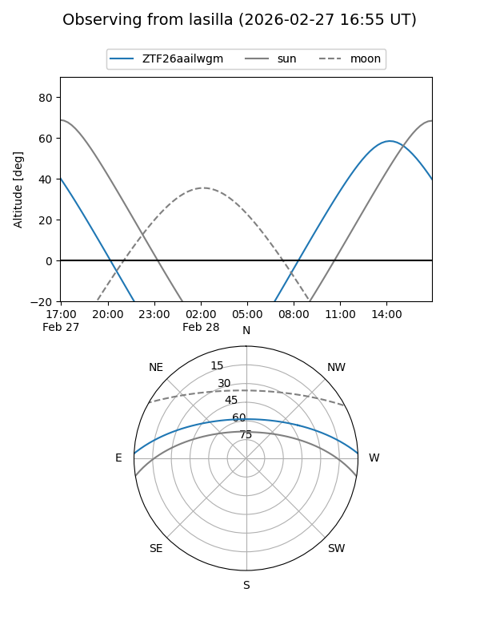
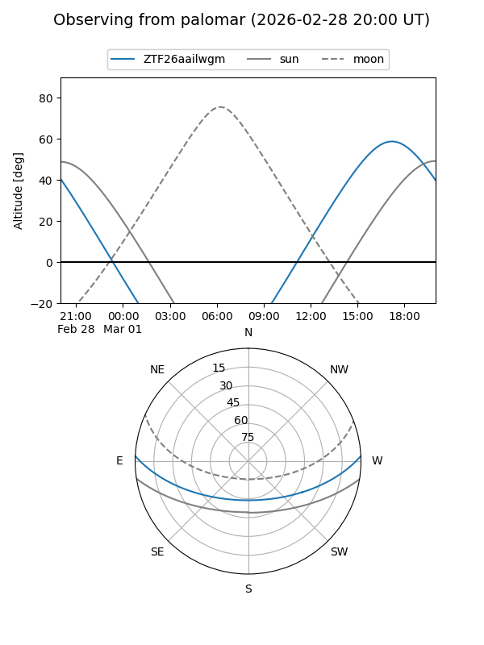
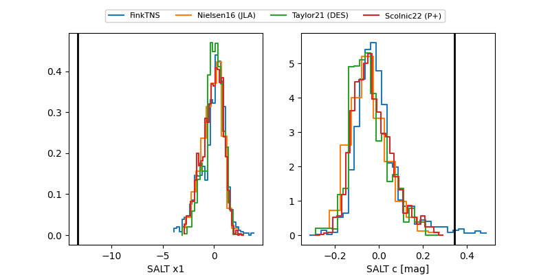

ZTF26aailwgm
Target ZTF26aailwgm at 2026-03-01 14:25
Aliases and brokers:
FINK: link
Lasair: link
ALeRCE: link
alt names
ZTF26aailwgm (ztf,fink_ztf)
Coordinates:
equatorial (ra, dec) = 300.4705,+2.10310
equatorial (HMS+DMS) = 20:01:52.93,+02:06:11.17
galactic (l, b) = (43.0822,-14.61686)
Flags:
Photometry:
last ztfr=18.83
5 ztfr detections
Lightcurve

Visibility


Additional plots
